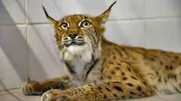
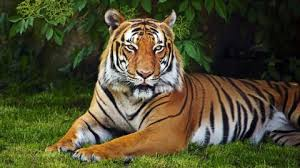
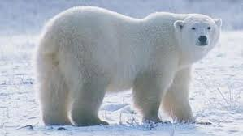

VAŞAK
Yırtıcı türlerden biri olan vaşaklar, ülkemizde görülüyor ancak geçmişe göre varlıkları tehlike altında. Çanakkale, Kastamonu, Artvin, Siirt, Hakkari, Bitlis, Bingöl, İzmir, Muğla, Antalya ve Bolu'da halen görülen vaşaklar, yasak olmasına rağmen postları için avlanmaktadır.

Sumatra Kaplanı
Kaplanın sadece Sumatra adasında yaşaması, insanoğlundan kaçmasını da zorlaştırıyor. Bu kaplanların sadece 100 tanesi doğal yaşamında hayatına devam ediyor. Diğerleri ise koruma altında.

Javan Gergedanı
Endonezya ve Vietnam ormanlarında yaşayan bu gergedan türü, kaçak avcıların boynuzlarının değeri nedeniyle avladıkları bir hayvan. Ormanlık alanların yani doğal yaşam alanlarının her geçen gün talan edilmesi de neslinin tükenme tehlikesiyle karşı karşıya kalmasına etkendir. Günümüzde sayıları 60 adet bile yok.

Kutup Ayısı
Kutup bölgesinin bu efsanevi canlısı, izinsiz avlanma ve kutuplardaki buzulların erimeye başlamasıyla tehdit altındadır. Sayıları her geçen gün azalan Kutup Ayılarının 25 bin civarında olduğu tahmin edilmektedir.
